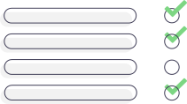

Un apprentissage suivi entièrement en ligne à travers des projets concret accompagné par un mentor, favorisant l’autonomie et l’organisation pour la réussite du parcours.
Du recueil du besoin client affiné en spécifications fonctionnelles à la conceptions de maquettes d’interface utilisateur.
De la définition du planning avec un diagram de Gantt pour délimiter les délais du projet. À la réalisation du budget et du devis.
Tout en ayant été introduit au méthodes de projets agiles.
J’ai pu acquérir une base méthodologique et d’outils pratiques
pour une définition et un cadrage complet d’un projet web.
Priorisation des fonctionnalités clés pour l’amélioration ou le développement d’un site à l’aide d’un benchmark fonctionnel.
Évaluation objective à l’aide d’un référentiel de la qualité d’un produit web et des voies d'améliorations SEO.
Anticipation des différentes fins de scénario possibles à l’aide d’une analyse des risques et d’un plan de prévention.